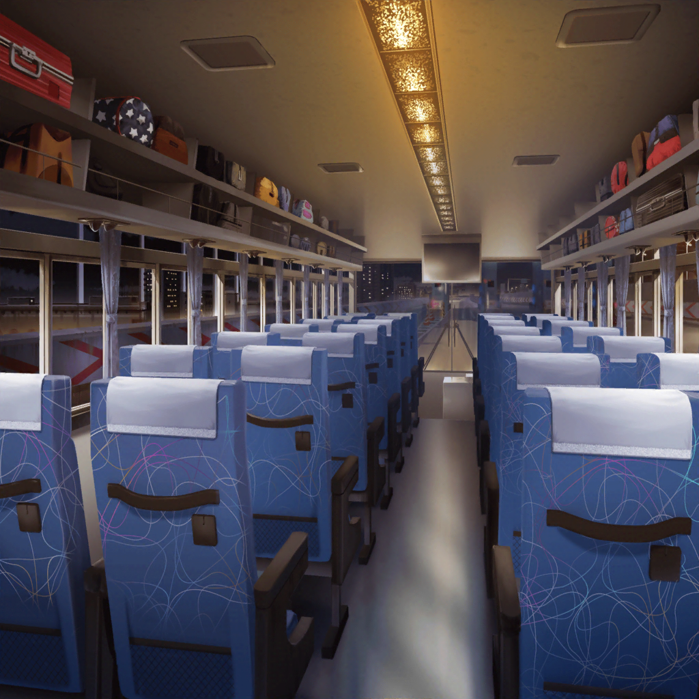

高速バス 車内
あこ
つ～かれたぁ～……
あっという間に一日経っちゃったねぇ～
美咲
うん、滑り始めてからはあっという間だった……
日菜
でも、麻弥ちゃんも滑れるようになったから、よかったと思う！
麻弥
はい！ まだうまくは滑れませんが……
みなさんのおかげで、スキーの苦手意識はなくなりました！
はぐみ
ほんと！？
麻弥
本当です！ 滑り方を覚えているうちに、
何度も通って、忘れないようにしたいなと思います！
はぐみ
じゃあさっ！ 今度また、一緒に行こうよ、麻弥さん！
麻弥
はい、ぜひ！
北沢さんには、もっとスキーやスノボの
滑り方を教えてほしいですー！
はぐみ
うん！ はぐみのわかることなら、何でも聞いて！
日菜
ねえねえ、美咲ちゃん
美咲
なんですか？
日菜
麻弥ちゃんが、運動のことであんなに
楽しそうなのって珍しいんだよ
美咲
え、そうなんですか？
あこ
まやさんってパスパレだと、あんな感じじゃないの？
日菜
うーん、あんな感じなんだけど、
なんていうか、もうちょっと頭脳系？
美咲
頭脳系……まあ、そういう印象はわかる気がします
あこ
そういえば、パスパレって最近はどんな感じなの？
日菜
みんな考えてることも違うから面白いって感じ！
仕事も増えてて、
色んなことができるから、あたしは結構楽しいかなー
美咲
リーダーは、彩先輩なんですよね？
日菜
うーん、そうなのかな？
彩ちゃんって全然リーダーっぽくないけどね
あこ
あはは、そうなの？ けど、すっごくカワイイよね！
日菜
彩ちゃんはかわいいって言うより、
やっぱり面白い！ だと思うなー
美咲
……っていうか、改めて考えてみると、
あたし達ってお互いのバンドのことあまりよく知らないですよね
日菜
でも、Roseliaとか、大体想像通りかなーって思うけど？
美咲
日菜さんから見たRoseliaってどんな感じなんですか？
日菜
最初は苦しそーって思ったけど、最近はそうでもなさそう。
おねーちゃん見てるとそう思う
あこ
練習は厳しめだけど苦しくはないよ〜！
美咲
あ、でもやっぱり練習は厳しいんだね……
あこ
うん！ あこ達は最高の音楽を目指してるからっ！
美咲
うわー……ものすごく意識高いなー……
日菜
あ、そうだ。
Roseliaにいるときのおねーちゃんって、どんな感じ？
あこ
紗夜さんはいつもめっちゃ正確っ！ て感じだよ。
譜面もほとんど間違えないし、先生みたいなんだ
あこ
でも、最近は前よりもカッコよくなった気がする！
正確さだけじゃない、っていうか……
日菜
わあ……っ！ そうなんだ！
美咲
紗夜先輩は、厳格ってイメージありますよね。
家でもそうなのかな？
日菜
そんなことないよ？
まあ厳しいときもあるけど、いつもは優しいし！
美咲
へえ……なんかちょっと意外……って言ったら失礼か
あこ
ハロハピはどんな感じ？
美咲
うちはトラブルメーカーが多いからね……
あたしとか、花音さんが振り回されてばっかりだよ
日菜
ハロハピも面白そうだもんね。
なんかこう、はちゃめちゃって感じ！
美咲
どういう感じですかそれ……
あ、でも今日みたいなはぐみはちょっと珍しいかも
あこ
へ？ どうして？
美咲
はぐみって言葉で説明するより、まず行動ってタイプでしょ？
でも、大和さんにスキーを教えるとき、
はぐみなりにがんばってたっていうか
美咲
ちゃんと分かるように伝えようとしてた気がして……
日菜
そうなの？
確かに、はぐみちゃんに教わってから、
麻弥ちゃん上手に滑れるようになってたね
美咲
同じバンドでいつも一緒だからですかね。
いつもよりちょっと大人っていうか、
そんな感じがしたんですよ
あこ
褒められてるよっ！ はぐみ！
美咲
ちょ……別に褒めてるわけじゃ……
はぐみ
…………
美咲
……はぐみ？
はぐみ
………………
あこ
……寝てる？
麻弥
…………ん
日菜
あ、麻弥ちゃんも寝てる
美咲
慣れないことして２人とも疲れちゃったんですかね？
日菜
よーし！ じゃあ、今のうちに顔に落書きしない？
あこ
ひなちん、それめっちゃいい！
あこ、カッコイイ落書きするよっ！
美咲
いやいやいや、そうっとしておいてあげましょうよ。ね？
あこ・日菜
えー？
美咲
……２人ともお疲れさま